[comment]: # (markdown: { smartypants: true }) <div style="font-family:serif;">Graph Theory & Practice</div> <hr style="border-width:1px 0 0 0; border-color:rgba(0,0,0,0.1);" /> <div style="font-size:24px; line-height:56px;"><strong>Tom Reitz</strong> | data engineer @ <img src="media/ea_logo.png" style="height:48px; width:auto; margin:0; padding:0 10px; vertical-align:middle;" /></div>
<!-- <div style="font-family:serif;">Goals</div> --> <!-- <hr style="border-width:1px 0 0 0; border-color:rgba(0,0,0,0.1);" /> --> <!-- * understand Graphs <!-- .element: class="fragment" data-fragment-index="1" --> <!-- * 10 minutes! <!-- .element: class="fragment" data-fragment-index="2" --> <!-- * 52 slides (5.2 slides / min) <!-- .element: class="fragment" data-fragment-index="3" --> <!-- [comment]: # (!!! data-auto-animate data-background-video="media/graph-bg.mp4", data-background-video-loop data-background-video-muted data-background-opacity="0.03") --> <div style="font-family:serif;">Definitions</div> <hr style="border-width:1px 0 0 0; border-color:rgba(0,0,0,0.1);" />  <!-- .element: style="height:30vh; max-width:50vw; image-rendering: crisp-edges;" --> <span><u>not</u> Graph.</span> <span>(Plot, Chart)</span>
<div style="font-family:serif;">Definitions</div> <hr style="border-width:1px 0 0 0; border-color:rgba(0,0,0,0.1);" />  <!-- .element: style="height:30vh; max-width:50vw; image-rendering: crisp-edges;" --> <span><em>Vertices</em> $V$ (nodes)</span>
<div style="font-family:serif;">Definitions</div> <hr style="border-width:1px 0 0 0; border-color:rgba(0,0,0,0.1);" />  <!-- .element: style="height:30vh; max-width:50vw; image-rendering: crisp-edges;" --> \+ <em>Edges</em> $E$ (links)
<div style="font-family:serif;">Definitions</div> <hr style="border-width:1px 0 0 0; border-color:rgba(0,0,0,0.1);" />  <!-- .element: style="height:30vh; max-width:50vw; image-rendering: crisp-edges;" --> = Graph $G$
<div style="font-family:serif;">Definitions</div> <hr style="border-width:1px 0 0 0; border-color:rgba(0,0,0,0.1);" />  <!-- .element: style="height:30vh; max-width:50vw; image-rendering: crisp-edges;" --> $|V| =$ <em>order</em> of $G$ (7) $|E| =$ <em>size</em> of $G$ (7)
<div style="font-family:serif;">Definitions</div> <hr style="border-width:1px 0 0 0; border-color:rgba(0,0,0,0.1);" />  <!-- .element: style="height:30vh; max-width:50vw; image-rendering: crisp-edges;" --> <em>degree</em> of vertex $v$ = # <em>incident edges</em> (5)
<div style="font-family:serif;">Definitions</div> <hr style="border-width:1px 0 0 0; border-color:rgba(0,0,0,0.1);" />  <!-- .element: style="height:30vh; max-width:50vw; image-rendering: crisp-edges;" --> $f, g$ = <em>adjacent vertices</em>
<div style="font-family:serif;">Definitions</div> <hr style="border-width:1px 0 0 0; border-color:rgba(0,0,0,0.1);" />  <!-- .element: style="height:30vh; max-width:50vw; image-rendering: crisp-edges;" --> <em>path</em>
<div style="font-family:serif;">Definitions</div> <hr style="border-width:1px 0 0 0; border-color:rgba(0,0,0,0.1);" />  <!-- .element: style="height:30vh; max-width:50vw; image-rendering: crisp-edges;" --> <em>Directed</em> graph
<div style="font-family:serif;">Definitions</div> <hr style="border-width:1px 0 0 0; border-color:rgba(0,0,0,0.1);" />  <!-- .element: style="height:30vh; max-width:50vw; image-rendering: crisp-edges;" --> <em>Cycle</em> in a directed graph
<div style="font-family:serif;">Definitions</div> <hr style="border-width:1px 0 0 0; border-color:rgba(0,0,0,0.1);" />  <!-- .element: style="height:30vh; max-width:50vw; image-rendering: crisp-edges;" --> <em>Weighted</em> graph
<div style="font-family:serif;">Definitions</div> <hr style="border-width:1px 0 0 0; border-color:rgba(0,0,0,0.1);" />  <!-- .element: style="height:30vh; max-width:50vw; image-rendering: crisp-edges;" --> <em>Tree</em> <small>single path between every two vertices... $|E| = |V| - 1$ </small>
<!-- <div style="font-family:serif;">Definitions</div> --> <!-- <hr style="border-width:1px 0 0 0; border-color:rgba(0,0,0,0.1);" /> --> <!--  <!-- .element: style="height:30vh; max-width:50vw; image-rendering: crisp-edges;" --> <!-- <em>Bipartite</em> graph --> <!-- <small>vertices separable into two unconnected sets</small> --> <!-- [comment]: # (||| data-auto-animate data-background-video="media/graph-bg.mp4", data-background-video-loop data-background-video-muted data-background-opacity="0.1") --> <div style="font-family:serif;">Definitions</div> <hr style="border-width:1px 0 0 0; border-color:rgba(0,0,0,0.1);" />  <!-- .element: style="height:20vh; max-width:50vw; image-rendering: crisp-edges;" --> <em>Complete</em> graph<br /> <small>$E = {V \choose 2} = {{ V \cdot (V-1) } \over 2} = O(V^2)$</small>
<div style="font-family:serif;">Storage</div> <hr style="border-width:1px 0 0 0; border-color:rgba(0,0,0,0.1);" /> <div style="display:inline-block; width:50%; float:left;"> 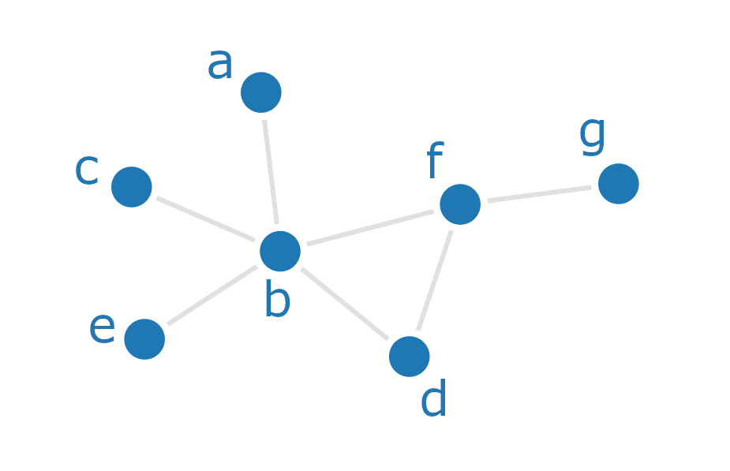 </div> <div style="display:inline-block; width:50%;"> ```yaml a: [b] b: [a, c, d, e, f] c: [b] d: [b, f] e: [b] f: [b, d, g] g: [f] ``` </div> <div style="clear:both;"></div> adjacency <em>list</em>
<div style="font-family:serif;">Storage</div> <hr style="border-width:1px 0 0 0; border-color:rgba(0,0,0,0.1);" /> <div style="display:inline-block; width:50%; float:left;"> </div> <div style="display:inline-block; width:50%;"> <div style="font-size:50%; background-color:#FFF;"> `$$\begin{array} {r|r|r|r|r|r|r|r|} & a & b & c & d & e & f & g \\ \hline a & - & 1 & - & - & - & - & - \\ \hline b & 1 & - & 1 & 1 & 1 & 1 & - \\ \hline c & - & 1 & - & - & - & - & - \\ \hline d & - & 1 & - & - & - & 1 & - \\ \hline e & - & 1 & - & - & - & - & - \\ \hline f & - & 1 & - & 1 & - & - & 1 \\ \hline g & - & - & - & - & - & 1 & - \\ \hline \end{array}$$` </div> </div> <br style="clear:both;"> adjacency <em>matrix</em><br /> <small>(symmetric if undirected)</small>
<div style="font-family:serif;">Representation</div> <hr style="border-width:1px 0 0 0; border-color:rgba(0,0,0,0.1);" /> <div style="display:inline-block; width:50%; float:left;"> ```dot digraph graphname { a -> b -> c; b -> d; } ``` </div> <div style="display:inline-block; width:50%;"> 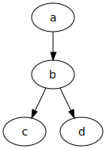 </div> [DOT](https://graphviz.org/doc/info/lang.html)
<div style="font-family:serif;">Representation</div> <hr style="border-width:1px 0 0 0; border-color:rgba(0,0,0,0.1);" /> <div style="font-size:70%"> ```xml <?xml version="1.0" encoding="UTF-8"?> <graphml xmlns="http://graphml.graphdrawing.org/xmlns" xmlns:xsi="http://www.w3.org/2001/XMLSchema-instance" xsi:schemaLocation="http://graphml.graphdrawing.org/xmlns/1.0/graphml.xsd"> <graph id="G" edgedefault="undirected"> <node id="n0"/> <node id="n1"/> <edge id="e1" source="n0" target="n1"/> </graph> </graphml> ``` </div> [GraphML](https://en.wikipedia.org/wiki/GraphML)
<div style="font-family:serif;">Other Representations</div> <hr style="border-width:1px 0 0 0; border-color:rgba(0,0,0,0.1);" /> * [GML](https://en.wikipedia.org/wiki/Graph_Modelling_Language) (graph modelling language) * [DGML](https://en.wikipedia.org/wiki/DGML) (directed graph markup language) * [RDF](https://www.w3.org/RDF/) (resource description framework)
<div style="font-family:serif;">Algorithms</div> <hr style="border-width:1px 0 0 0; border-color:rgba(0,0,0,0.1);" /> <div style="display:inline-block; width:65%; float:left;"> * Search - [Breadth-First Search](https://en.wikipedia.org/wiki/Breadth-first_search) (BFS) - [implemented](https://www.geeksforgeeks.org/breadth-first-search-or-bfs-for-a-graph/) using a queue - [Depth-First Search](https://en.wikipedia.org/wiki/Depth-first_search) (DFS) - [implemented](https://www.geeksforgeeks.org/depth-first-search-or-dfs-for-a-graph/) with recursion - both $\approx O(V + E)$ </div> <div style="display:inline-block; width:35%;"> 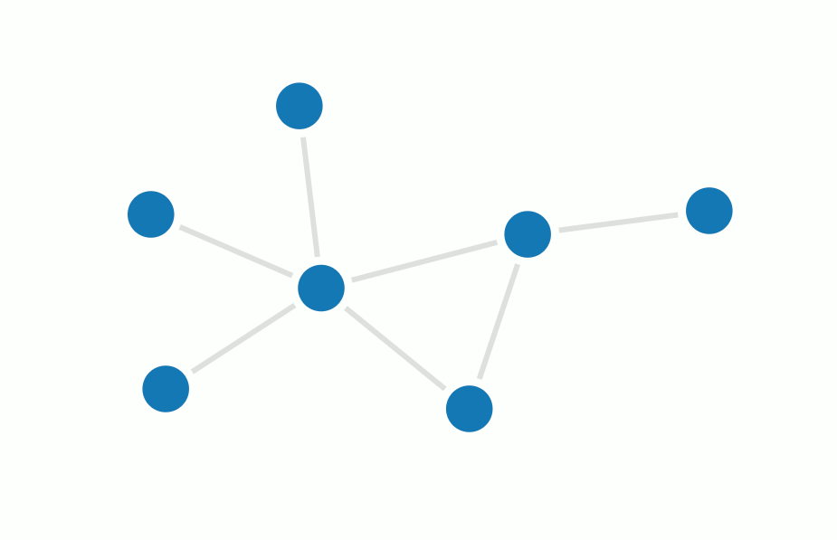 </div>
<div style="font-family:serif;">Algorithms</div> <hr style="border-width:1px 0 0 0; border-color:rgba(0,0,0,0.1);" /> <div style="display:inline-block; width:65%; float:left;"> * [Cycle detection](https://en.wikipedia.org/wiki/Cycle_(graph_theory)#Cycle_detection) in directed graphs - $\approx O(V + E)$ * [Topological sorting](https://en.wikipedia.org/wiki/Topological_sorting) - $\approx O(V + E)$ </div> <div style="display:inline-block; width:35%;"> 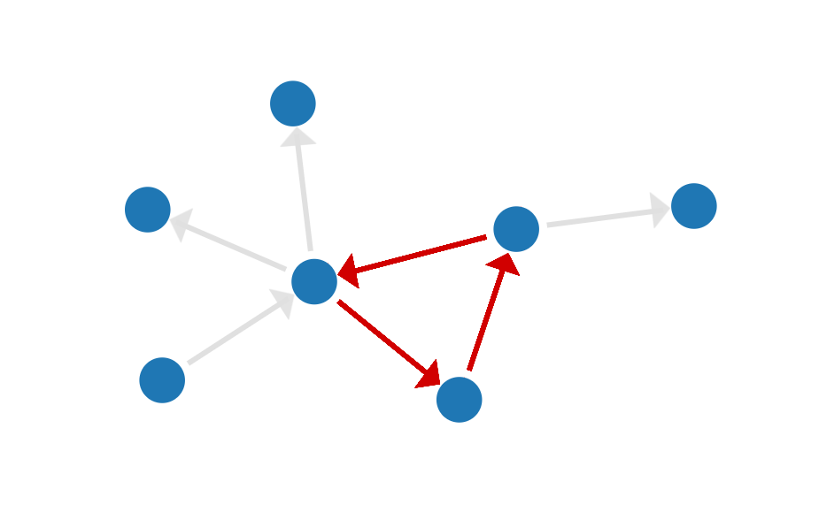 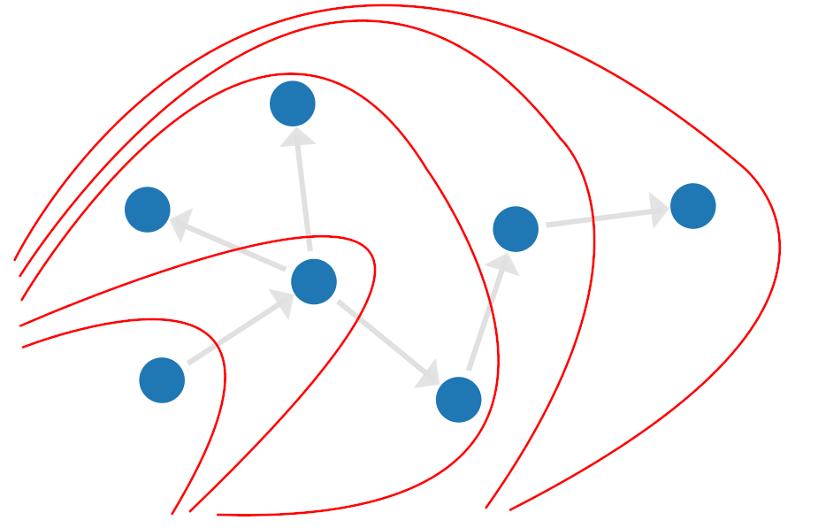 </div> <div style="margin-top:-60px;"> * [Shortest path](https://en.wikipedia.org/wiki/Shortest_path_problem) - several algorithms, $O(E \cdot V)$ to $O(V ^ 2)$ or better </div>
<!-- <div style="font-family:serif;">Algorithms</div> --> <!-- <hr style="border-width:1px 0 0 0; border-color:rgba(0,0,0,0.1);" /> --> <!-- <div style="display:inline-block; width:65%; float:left;"> * [Shortest path](https://en.wikipedia.org/wiki/Shortest_path_problem) - directed vs. undirected - weighted vs. unweighted - [Dijkstra](https://www.geeksforgeeks.org/dijkstras-shortest-path-algorithm-using-priority_queue-stl/), [Johnson](https://www.geeksforgeeks.org/johnsons-algorithm-for-all-pairs-shortest-paths-implementation/), [Bellman-Ford](https://www.geeksforgeeks.org/bellman-ford-algorithm-dp-23/) algorithms - performance from $O(E \cdot V)$ to $O(V ^ 2)$ or better * [Minimum Spanning Tree](https://en.wikipedia.org/wiki/Minimum_spanning_tree) - [Prim's algorithm](https://www.geeksforgeeks.org/prims-minimum-spanning-tree-mst-greedy-algo-5/) $\approx O(V^2)$ - [Kruskal's algorithm](https://www.geeksforgeeks.org/kruskals-algorithm-in-python/) $\approx O(E \cdot log V)$ </div> <div style="display:inline-block; width:35%;"> 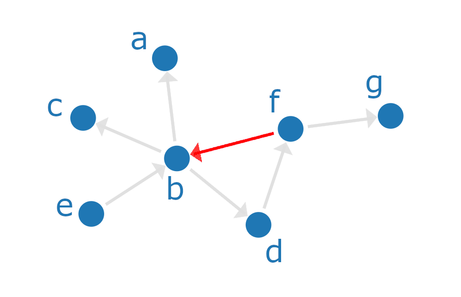 </div>
<div style="font-family:serif;">Other Algorithms</div> <hr style="border-width:1px 0 0 0; border-color:rgba(0,0,0,0.1);" /> * [Connected components](https://en.wikipedia.org/wiki/Component_(graph_theory)) (search) * Max-flow / min-cut ([Ford-Fulkerson](https://www.geeksforgeeks.org/ford-fulkerson-algorithm-for-maximum-flow-problem/) algorithm)
<div style="font-family:serif;">Examples</div> <hr style="border-width:1px 0 0 0; border-color:rgba(0,0,0,0.1);" />  <!-- .element: style="height:40vh; max-width:80vw; image-rendering: crisp-edges;" --> <small>Map directions?</small>
<div style="font-family:serif;">Examples</div> <hr style="border-width:1px 0 0 0; border-color:rgba(0,0,0,0.1);" />  <!-- .element: style="height:40vh; max-width:80vw; image-rendering: crisp-edges;" --> <small>Intersections as nodes...</small>
<div style="font-family:serif;">Examples</div> <hr style="border-width:1px 0 0 0; border-color:rgba(0,0,0,0.1);" />  <!-- .element: style="height:40vh; max-width:80vw; image-rendering: crisp-edges;" --> <small>Roads as links... (weighted by speed limit, lanes, traffic)</small>
<div style="font-family:serif;">Examples</div> <hr style="border-width:1px 0 0 0; border-color:rgba(0,0,0,0.1);" />  <!-- .element: style="height:40vh; max-width:80vw; image-rendering: crisp-edges;" --> <small>Path-finding!</small>
<div style="font-family:serif;">Examples</div> <hr style="border-width:1px 0 0 0; border-color:rgba(0,0,0,0.1);" />  <!-- .element: style="height:40vh; max-width:80vw; image-rendering: crisp-edges;" --> <small>(solved)</small>
<div style="font-family:serif;">Examples</div> <hr style="border-width:1px 0 0 0; border-color:rgba(0,0,0,0.1);" /> 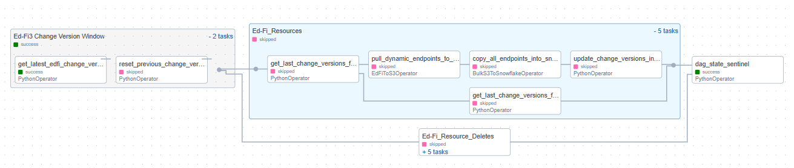 <div style="display:inline-block; width:40%; float:left;"> <div style="font-size:50%; background-color:#FFF;"> * <b>DAGs!</b> * model task- or data-dependencies * executed in topological order * DAGre layout * <em>top</em>: Airflow task DAG * <em>right</em>: earthmover transformation DAG * <em>next slide</em>: dbt transformation DAG </div> </div> <div style="display:inline-block; width:60%;"> 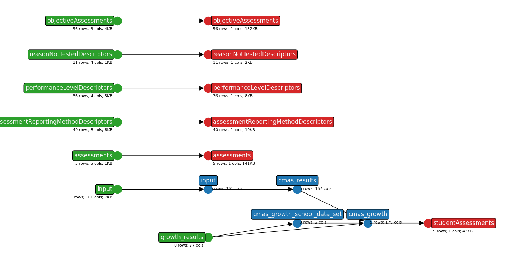 </div>
<div style="font-family:serif;">Examples</div> <hr style="border-width:1px 0 0 0; border-color:rgba(0,0,0,0.1);" /> 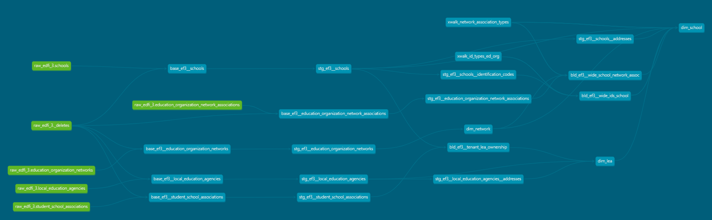 <small>dbt transformation DAG</small>
<div style="font-family:serif;">Examples</div> <hr style="border-width:1px 0 0 0; border-color:rgba(0,0,0,0.1);" /> <div style="display:inline-block; width:30%; margin-top:20vh; float:left;"> <div style="font-size:50%; background-color:#FFF;"> * meetings at EA * from Outlook calendar data * directed, acyclic graph with radial arc visualization </div> </div> <div style="display:inline-block; width:70%; background-color:#FFF;"> 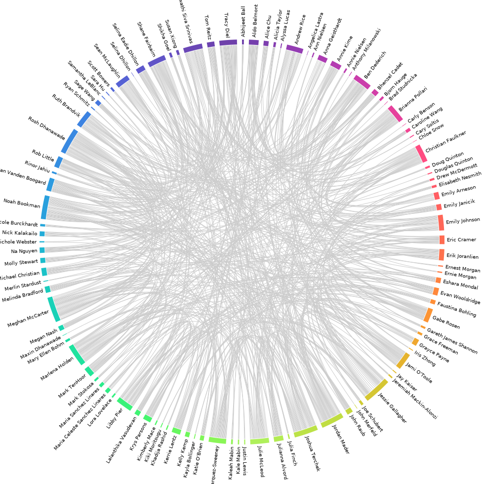 </div>
<div style="font-family:serif;">Examples</div> <hr style="border-width:1px 0 0 0; border-color:rgba(0,0,0,0.1);" /> <div style="display:inline-block; width:30%; margin-top:20vh; float:left;"> <div style="font-size:50%; background-color:#FFF;"> * meetings at EA (Tom's) * from Outlook calendar data * directed, acyclic graph with radial arc visualization </div> </div> <div style="display:inline-block; width:70%; background-color:#FFF;"> 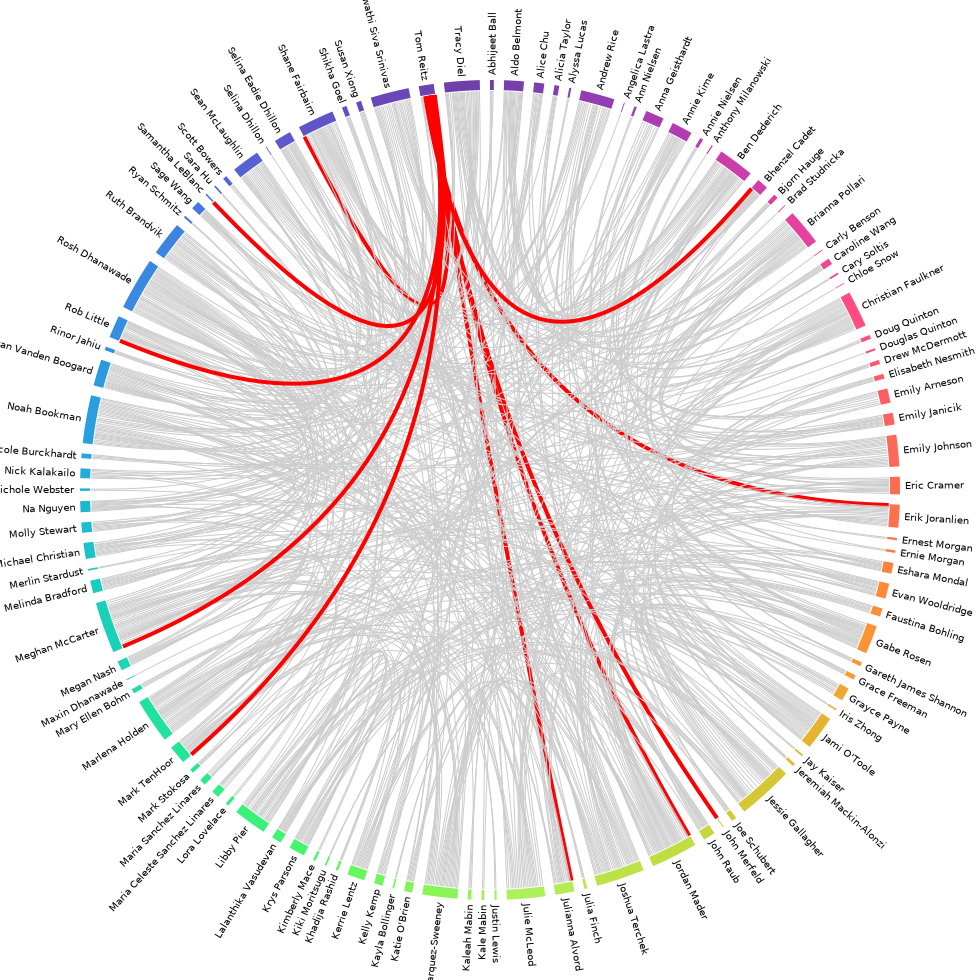 </div>
<div style="font-family:serif;">Examples</div> <hr style="border-width:1px 0 0 0; border-color:rgba(0,0,0,0.1);" /> <div style="display:inline-block; width:30%; margin-top:20vh; float:left;"> <div style="font-size:50%; background-color:#FFF;"> * financial flow (thousands of $) * based on public data such as [EA 2023 IRS documents](https://projects.propublica.org/nonprofits/organizations/461580391) * weighted, directed, acyclic graph with Sankey visualization </div> </div> <div style="display:inline-block; width:70%;"> 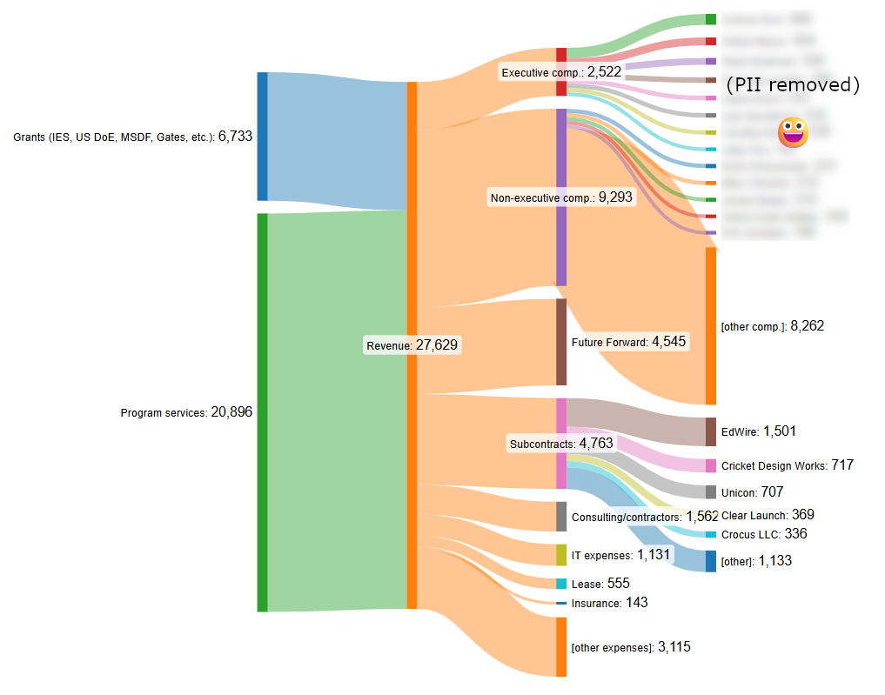 </div>
<div style="font-family:serif;">Examples</div> <hr style="border-width:1px 0 0 0; border-color:rgba(0,0,0,0.1);" /> <div style="display:inline-block; width:60%; float:left; font-size:50%; background-color:#FFF;"> 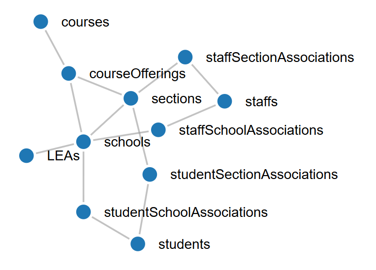 * (part of the) Ed-Fi data model * nodes = Resources * links = References </div> <div style="display:inline-block; width:40%; font-size:50%; background-color:#FFF;"> 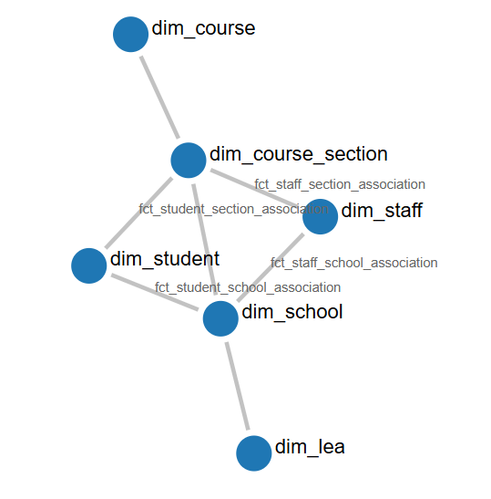 * (part of the) EDU data model * nodes = dims * links = facts, foreign keys (`k_*`) </div>
<!-- <div style="font-family:serif;">Other Examples</div> <hr style="border-width:1px 0 0 0; border-color:rgba(0,0,0,0.1);" /> * [Seven Bridges of Königsberg](https://en.wikipedia.org/wiki/Seven_Bridges_of_K%C3%B6nigsberg) * [Graph coloring](https://en.wikipedia.org/wiki/Graph_coloring) and the [four color theorem](https://en.wikipedia.org/wiki/Four_color_theorem) * [Stable Matching problem](https://en.wikipedia.org/wiki/Stable_marriage_problem) and the [max-flow, min-cut theorem](https://en.wikipedia.org/wiki/Max-flow_min-cut_theorem) * [Traveling Salesman problem](https://en.wikipedia.org/wiki/Travelling_salesman_problem#Exact_algorithms) * [Erdős number](https://en.wikipedia.org/wiki/Erd%C5%91s_number) and collaboration distance
<div style="font-family:serif;">Data as a graph</div> <hr style="border-width:1px 0 0 0; border-color:rgba(0,0,0,0.1);" /> <small>Suppose we want to find students who are in a class together...</small> 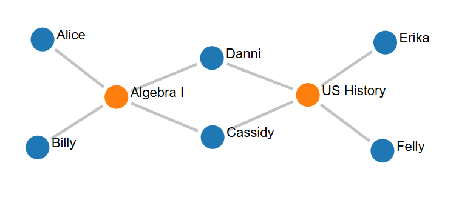 <small>(paths of length 2 in a graph like above)</small>
<div style="font-family:serif;">Data as a graph</div> <hr style="border-width:1px 0 0 0; border-color:rgba(0,0,0,0.1);" /> <div style="font-size:50%"> `$$C = \begin{array} {r|r|r|r|r|r|r|r|} & Algebra I & US History & ... \\ \hline Alice & 1 & - & \dots \\ \hline Billy & 1 & - & \dots \\ \hline Cassidy & 1 & 1 & \dots \\ \hline Danni & 1 & 1 & \dots \\ \hline Erika & - & 1 & \dots \\ \hline Felly & - & 1 & \dots \\ \hline \vdots & \vdots & \vdots & \vdots \\ \hline \end{array}$$` </div> <small>adjacency matrix $C$</small>
<div style="font-family:serif;">Data as a graph</div> <hr style="border-width:1px 0 0 0; border-color:rgba(0,0,0,0.1);" /> <div style="font-size:50%"> `$$C \cdot C^{T} = \begin{array} {r|r|r|r|r|r|r|r|} & Alice & Billy & Cassidy & Danni & Erika & Felly & ... \\ \hline Alice & 1 & 1 & 1 & 1 & - & - & \dots \\ \hline Billy & 1 & 1 & 1 & 1 & - & - & \dots \\ \hline Cassidy & 1 & 1 & 2 & 2 & 1 & 1 & \dots \\ \hline Danni & 1 & 1 & 2 & 2 & 1 & 1 & \dots \\ \hline Erika & - & - & 1 & 1 & 1 & 1 & \dots \\ \hline Felly & - & - & 1 & 1 & 1 & 1 & \dots \\ \hline \vdots & \vdots & \vdots & \vdots & \vdots & \vdots & \vdots & \vdots \\ \hline \end{array}$$` </div> <small>adjacency matrix multiplication</small>
<div style="font-family:serif;">Data as a graph</div> <hr style="border-width:1px 0 0 0; border-color:rgba(0,0,0,0.1);" /> <div style="font-size:50%"> ```sql select ssa1.k_student, ssa2.k_student, count(*) from analytics.prod_wh.fct_student_section_association ssa1 join analytics.prod_wh.fct_student_section_association ssa2 on ssa1.k_course_section = ssa2.k_course_section group by 1,2 ``` | k_student | k_student | count(*) | |---|---|---| |6d0cee02104b5081a3bf2ccf6aba41bc|03b9b001da4a3aaa35af708606d6a215|2| |958f2878bf9e09742cf78680eda2aea5|03b9b001da4a3aaa35af708606d6a215|4| |724aba25d88a215cec59ff953bdc3dac|03b9b001da4a3aaa35af708606d6a215|2| |35b20a781761b44053407ad274c46fa5|03b9b001da4a3aaa35af708606d6a215|1| |...|...|...| </div> <small>join</small>
<div style="font-family:serif;">Data as a graph</div> <hr style="border-width:1px 0 0 0; border-color:rgba(0,0,0,0.1);" /> <small>Analog between graph search, matrix multiplication, and database table join</small>
<div style="font-family:serif;">Graph Viz Layouts</div> <hr style="border-width:1px 0 0 0; border-color:rgba(0,0,0,0.1);" /> <div style="font-size:40%"> <table> <tbody> <tr> <td style="width:25%"><a href="https://observablehq.com/@d3/force-directed-graph-component">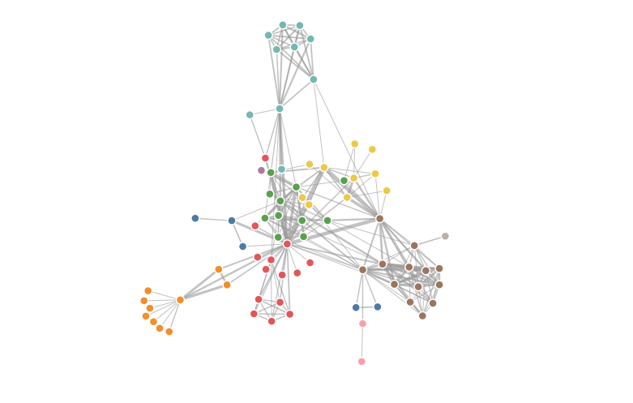</a></td> <td style="width:25%"><a href="https://www.jroehm.com/2014/10/29/social-network-vizualiation/">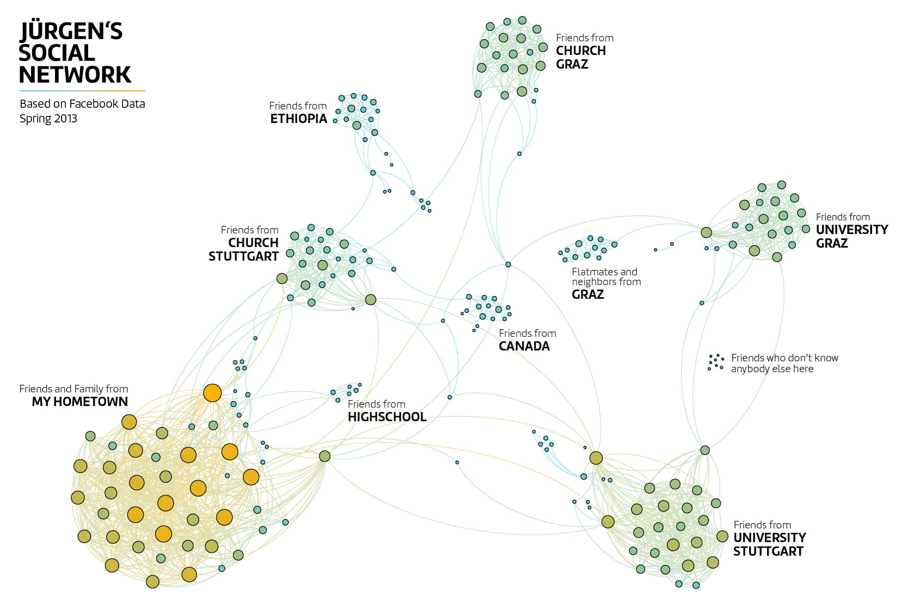</a></td> <td style="width:25%"><a href="https://observablehq.com/@d3/hierarchical-edge-bundling">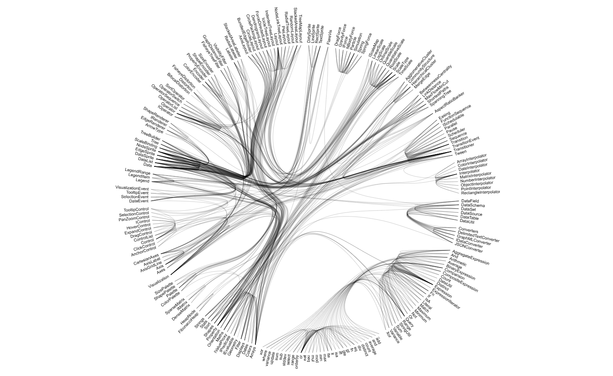</a></td> <td style="width:25%"><a href="https://deeppavlov.ai/research/tpost/bn15u1y4v1-improving-knowledge-graph-completion-wit">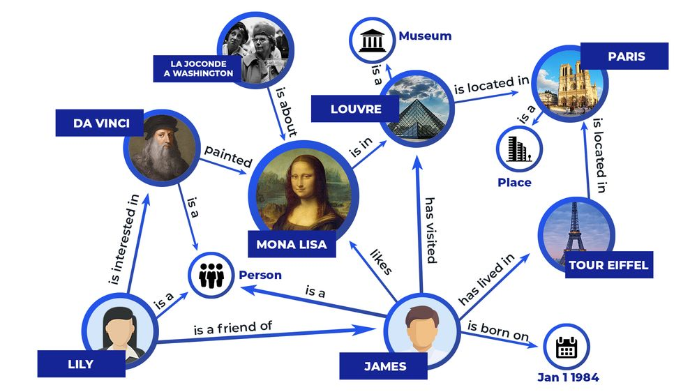</a></td> </tr> <tr> <td style="text-align:center">Force-directed</td> <td style="text-align:center">Clustered</td> <td style="text-align:center">Edge bundling</td> <td style="text-align:center">Knowledge graph</td> </tr> <tr> <td><a href="https://d3-graph-gallery.com/arc.html">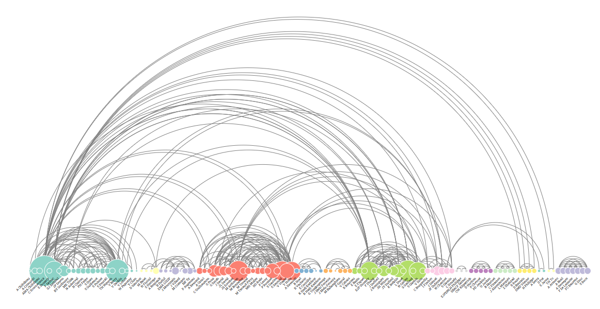</a></td> <td><a href="https://observablehq.com/@d3/sankey-component">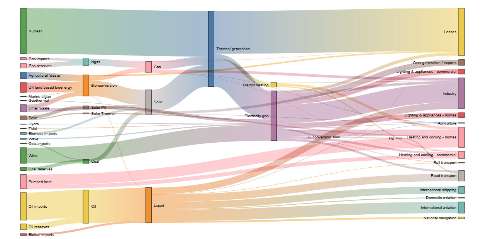</a></td> <td><a href="https://github.com/edanalytics/dtml_editor#getting-started">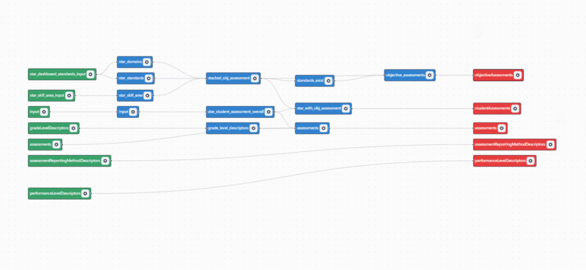</a></td> <td><a href="https://github.com/edanalytics/earthmover/network">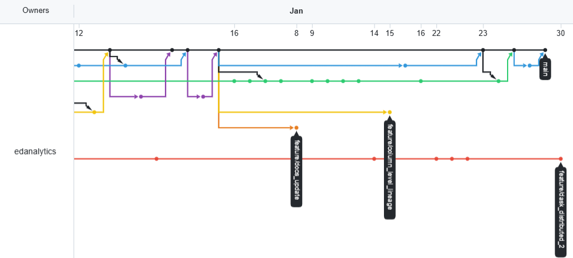</a></td> </tr> <tr> <td style="text-align:center">Arc</td> <td style="text-align:center">Sankey</td> <td style="text-align:center">DAGre</td> <td style="text-align:center">Git network</td> </tr> </tbody> </table><br /> (<a href="https://medium.com/towards-data-science/large-graph-visualization-tools-and-approaches-2b8758a1cd59">Towards Data Science article</a> about large graph viz) </div>
<div style="font-family:serif;">Software Libraries</div> <hr style="border-width:1px 0 0 0; border-color:rgba(0,0,0,0.1);" /> <div style="font-size:60%"> <table> <thead> <tr> <td>Language</td> <td>Library</td> <td>Notes</td> </tr> </thead> <tbody> <tr> <td rowspan=2>Python</td> <td><a href="https://networkx.org/">NetworkX</a></td> <td></td> </tr> <tr> <td><a href="https://pygraphviz.github.io/">PyGraphViz</a></td> <td>(Viz)</td> </tr> <tr> <td>Rust</td> <td><a href="https://www.rustworkx.org/">rustworkx</a></td> <td></td> </tr> <tr> <td rowspan=3>Javascript</td> <td><a href="https://js.cytoscape.org/">Cytoscape.js</a></td> <td></td> </tr> <tr> <td><a href="https://d3js.org/">D3.js</a></td> <td>(Viz)</td> </tr> <tr> <td><a href="https://reactflow.dev/">React Flow</a></td> <td>(UI)</td> </tr> <tr> <td>C/C++</td> <td><a href="https://igraph.org/c/">igraph</a></td> <td></td> </tr> </tbody> </table> </div>
### Thank you! Questions?  <!-- .element: style="height:35vh; max-width:35vw; image-rendering: crisp-edges;" --> (slides)